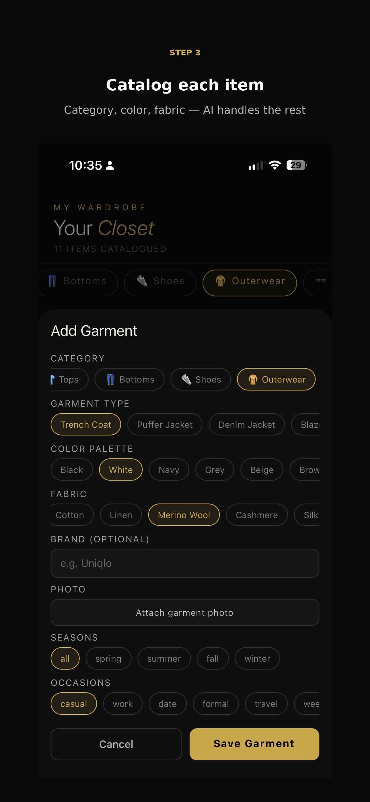
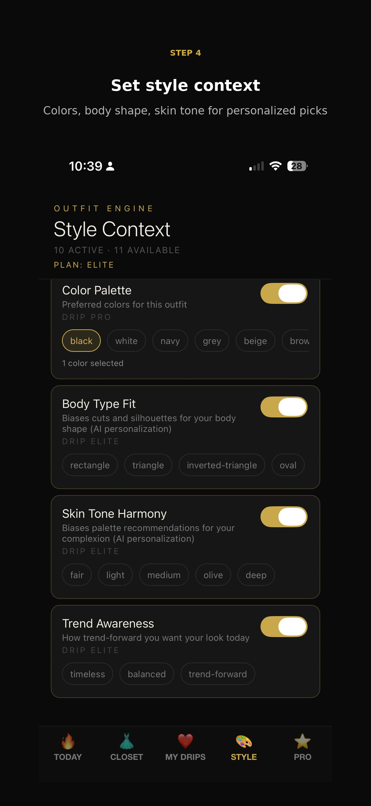

Seasons (all / spring / summer / fall / winter) and Occasions (casual / work / date / formal / travel)
Tap Save Garment when you're done — it appears instantly in your closet list.
Why photos matter: attaching a real photo lets the AI render outfits with the actual garment instead of a generic icon — and your photos sync to your account, so they survive a reinstall or a new phone.

4 Generate your first outfit
The TODAY tab is your daily drop. Shake your phone or hit the gold pill to roll a new look.
What's on the screen
SHAKE TO RANDOMIZE — physically shake the phone for a new fit, or tap the pill
An outfit name and a % MATCH score
The garments — pulled straight from your closet
A WHY THIS OUTFIT card explaining the AI's reasoning, with weather, season and occasion context
← Previous Outfit to step back to the last roll
Counter at the top ("1154 of 1200 suggestions left this month") shows your monthly fair-use budget for your current plan.
5 Tune your Style Context
The STYLE tab is the dial-board that personalises every outfit the engine produces.
What you can tune
Color Palette — pick the colors you actually want this outfit built around
Body Type Fit — bias cuts and silhouettes for your shape
Skin Tone Harmony — bias palette recommendations for your complexion
Trend Awareness — choose timeless, balanced, or trend-forward
Each card has a toggle on the right — flip it off and that signal is ignored for the next roll.
Plan tags: cards marked DRIP PRO or DRIP ELITE require the matching subscription — see step 6.

6 Save favorites & unlock Pro
Tap the heart on any outfit you love — it lives forever in MY DRIPS.
Your lookbook
Tap the heart on any outfit on the Today tab
Open the ❤️ MY DRIPS tab to see every saved fit
Each card shows the outfit name, % MATCH, the engine that built it, and the garments
Want more rolls?
DRIP FREE — 5 outfit suggestions / month, basic weather sync, up to 20 wardrobe items
DRIP PRO ($6.99/mo) — 400 suggestions / month, 10 smart parameters, AI style learning, no ads
DRIP ELITE ($10.99/mo) — 1200 suggestions / month, personal AI style twin, exclusive brand drops, IRL stylist 1×/month, VIP priority support
7-day free trial on paid plans — cancel anytime from the ⭐ PRO tab.
7 Try it on with FitMatic
FitMatic uses AI to render any garment on a photo of you — see the fit before you wear it. Available on DRIP PRO and DRIP ELITE.
How to use it
Open the FitMatic tab in the bottom bar
Tap Your Photo and choose a clear photo of yourself from your library
Tap Garment and choose a flat photo of the item you want to try on
Pick Preview (Pro) or HD (Elite), then tap Generate
Wait ~10–30 seconds — the rendered try-on appears below
Best results — your photo
Full upper body or full body, facing the camera, arms at your sides
Even, natural lighting — avoid harsh shadows on your face or chest
Plain, uncluttered background if possible
Form-fitting base layer (a tee or tank) so the AI can read your silhouette
Avoid sunglasses, hats, or hair covering your shoulders for top try-ons
Best results — the garment
Use the retailer's product photo or your own flat-lay against a plain surface
Make sure the whole garment is in frame
One item at a time — tops, bottoms, or full looks all work
Privacy: your photo is processed by our AI partner only to generate the try-on. You can permanently remove every photo you've uploaded by tapping DELETE ACCOUNT in ⚙️ Settings.
★ Pro tips
Small habits that make Dripmatiq much smarter.
Photograph items in natural light on a plain background so the AI registers colors accurately.
Don't like a roll? Just shake again — every roll counts against your monthly budget but the engine never repeats the exact same outfit twice in a row.
Use the Style tab to flip on Body Type Fit and Skin Tone Harmony — that's where personalisation gets noticeably sharper.
Tag occasions honestly when you add garments — "casual" vs "formal" decides which items are eligible for which fits.
Star outfits you actually wore in MY DRIPS so the AI learns your real-world preferences over time.